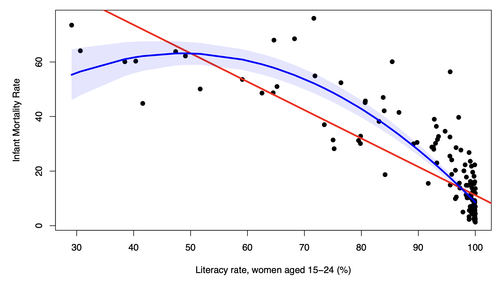

This lesson further expands our regression toolkit, by introducing both interaction effects, and non-linear transformations of variables.
This lesson covers the following topics:
- Heterogeneity in relationships and motivation of interaction effects.
- How interaction effects work.
- Polynomial and Logarithmic transformations of variables.
1.7.1: Heterogeneity and Interactions
So far we have discussed the standard linear model:
y_i = \beta_0 + \beta_1 x_{1i} + \dots + \beta_k x_{ki} + u_i
The standard linear model assumes that the relationship of any explanatory variable x_j with y is always \beta_j, across every observation of i.
- Essentially, it says that the relationship is constant across all units.
However, this might not always be the case. When the relationship between two variables is not constant across all units, there are heterogenous effects.
Heterogenous effects are relationships between variables, that differ in magnitude between units, often due to the value of some third characteristic.
A few examples of heterogenous effects include:
- The relationship between education and income may vary in magnitude depending on the age of the unit.
- The relationship between minimum wage and unemployment may vary in magnitude between rural and urban areas.
- The relationship between receiving a patent and sales growth of a company may differ depending on the age of the firm.
In all these examples, the magnitude of the relationship between two variables changes and depends on some third characteristic.
Heterogenous effects are very common. We might want some way to incorporate them into regressions. Why?
- First of all, incorporating a heterogeneous effect into a regression allows us to use hypothesis testing to test if there is statistically significant evidence of a heterogeneous effect.
- Second of all, if there indeed is a statistically significant heterogenous effect, incorporating it in a regression can improve our prediction and estimation of our regression.
To incorporate heterogenous effects into regression, we do what is called an interaction effect.
An interaction effect is a way to incorporate heterogeneity into regressions. It takes the form of two explanatory variables being multiplied together.
For example, if we want to test how the relationship between x_1 and y changes with different values of x_2, our regression would be of the form:
y_i = \beta_0 + \beta_1x_1 + \beta_2x_2 + \beta_3x_1x_2 + u_i
- Where \beta_3 x_1 x_2 is the interaction term.
- Note: when we include an interaction term \beta_3 x_1 x_2, we must also include the independent terms of each variable in the regression, as we see above with \beta_1 x_1 and \beta_2 x_2.
Naturally, our fitted interaction model after estimating parameters will be:
\hat y = \hat\beta_0 + \hat\beta_1x_1 + \hat\beta_2x_2 + \hat\beta_3x_1x_2
- If our statistical hypothesis test of the interaction term coefficient \hat\beta_3 is significant, then we can be confident that there is a heterogenous effect in our regression, where the magnitude of effect of x_1 on y depends on x_2.
Now that we know what an interaction term is, we will explore how interaction terms work and are interpreted for different types of interactions.
1.7.2: Interactions with Two Dummies
Let us consider the simplest form of interactions. Let us say we have the fitted interaction model:
\hat y_i = \hat\beta_0 + \hat\beta_1x_1 + \hat\beta_2x_2 + \hat\beta_3x_1x_2
Where x_1 and x_2 are both binary (dummy) variables, with categories 0 and 1. How would we interpret our coefficients?
We can “calculate” the interpretation of coefficients by plugging in and testing the four possible combinations of x_1 and x_2:
- x_1 = 0, x_2 = 0.
- x_1 = 1, x_2 = 0.
- x_1 = 0, x_2 = 1.
- x_1 = 1, x_2 = 1.
Let us test the scenario where both x_1 and x_2 equal 0. Let us plug in x_1 = 0 and x_2 = 0 into our fitted values:
\begin{split} \hat y & = \hat\beta_0 + \hat\beta_1x_1 + \hat\beta_2x_2 + \hat\beta_3x_1x_2 \\ & = \hat\beta_0 + \hat\beta_1(0) + \hat\beta_2(0) + \hat\beta_3(0)(0) \\ & = \hat\beta_0 \end{split}
Let us test the scenario where x_1 = 1 and x_2 = 0:
\begin{split} \hat y & = \hat\beta_0 + \hat\beta_1x_1 + \hat\beta_2x_2 + \hat\beta_3x_1x_2 \\ & = \hat\beta_0 + \hat\beta_1(1) + \hat\beta_2(0) + \hat\beta_3(1)(0) \\ & = \hat\beta_0 + \hat\beta_1 \end{split}
Let us test the scenario where x_1 = 0 and x_2 = 1:
\begin{split} \hat y & = \hat\beta_0 + \hat\beta_1x_1 + \hat\beta_2x_2 + \hat\beta_3x_1x_2 \\ & = \hat\beta_0 + \hat\beta_1(0) + \hat\beta_2(1) + \hat\beta_3(0)(1) \\ & = \hat\beta_0 + \hat\beta_2 \end{split}
Let us test the scenario where x_1 = 1 and x_2 = 1:
\begin{split} \hat y & = \hat\beta_0 + \hat\beta_1x_1 + \hat\beta_2x_2 + \hat\beta_3x_1x_2 \\ & = \hat\beta_0 + \hat\beta_1(1) + \hat\beta_2(1) + \hat\beta_3(1)(1) \\ & = \hat\beta_0 + \hat\beta_1 + \hat\beta_2 + \hat\beta_3 \end{split}
What have we learned from this? Look at the first two scenarios. Going from x_1 = 0 and x_2 = 0 to x_1 = 1 and x_2 = 0, we go from expected \hat\beta_0 to \hat\beta_0 + \hat\beta_1.
- The difference between the two scenarios is \hat\beta_1
- This tells us that holding x_2 = 0 constant, and changing x_1 from 0 to 1, the change in y is \hat\beta_1.
Now look at the last two scenarios. Going from x_1 = 0 and x_2 = 1 to x_1 = 1 and x_2 = 1, we go from expected \hat\beta_0 + \hat\beta_2 to \hat\beta_0 + \hat\beta_1 + \hat\beta_2 + \hat\beta_3.
- The difference between the two scenarios is \hat\beta_1 + \hat\beta_3.
- This tells us that holding x_2 = 1 constant, and changing x_1 from 0 to 1, the change in y is \hat\beta_1 + \hat\beta_3.
Summarising this, we can come up with the following interpretations:
The effect of x_1 depends on x_2 as follows:
- When x_2=0, the effect of x_1 (going from 0 to 1) on y is \hat\beta_1.
- When x_2 = 1, the effect of x_1 (going from 0 to 1) on y is \hat\beta_1 + \hat\beta_3.
Thus, if our hypothesis test says that \hat\beta_3 ≠ 0, then we know that the relationship between x_1 and y depends on the value of x_2, and thus, x_1 has a heterogenous effect on y.
1.7.3: Interactions with One Dummy
Now, let us consider another scenario. Let us say we have the fitted interaction model:
\hat y_i = \hat\beta_0 + \hat\beta_1x_1 + \hat\beta_2x_2 + \hat\beta_3x_1x_2
Where x_1 is a continuous variable, and x_2 is a binary (dummy) variables, with categories 0 and 1. How would we interpret our coefficients?
- This is probably the most common scenario. Examples include how years of education ( x_1 ) effects income ( y ), depending on gender ( x_2 ).
- Other examples include any continuous x_1 relationship on y depending on x_2 being gender, developed/developing, treated/untreated, majority/minority, etc.
We can solve for the interpretations in a slightly different way. We know we have two scenarios of x_2: either x_2 = 0, or x_2 = 1. Let us plug in those values to see how our regression changes.
Let us say x_2 = 0. Let us plug that in:
\begin{split} \hat y & = \hat\beta_0 + \hat\beta_1x_1 + \hat\beta_2x_2 + \hat\beta_3x_1x_2 \\ & = \hat\beta_0 + \hat\beta_1x_1 + \hat\beta_2(0) + \hat\beta_3x_1(0) \\ & = \hat\beta_0 + \hat\beta_1x_1 \end{split}
Now, let us say x_2 = 1. Let us plug that in:
\begin{split} \hat y & = \hat\beta_0 + \hat\beta_1x_1 + \hat\beta_2x_2 + \hat\beta_3x_1x_2 \\ & = \hat\beta_0 + \hat\beta_1x_1 + \hat\beta_2(1) + \hat\beta_3x_1(1) \\ & = \hat\beta_0 + \hat\beta_1x_1 + \hat\beta_2 + \hat\beta_3x_1 \end{split}
Let us reorganise that final equation a little bit into a more “useful” format:
\begin{split} \hat y & = \hat\beta_0 + \hat\beta_1 x_1 + \hat\beta_2 + \hat\beta_3x_1 \\ & = \hat\beta_0 + \hat\beta_2 + \hat\beta_1 x_1 + \hat\beta_3x_1 \\ & = \hat\beta_0 + \hat\beta_2 + (\hat\beta_1 + \hat\beta_3)x_1 \end{split}
So now, we have two regression equations for the two potential values of x_2:
\begin{split} \hat y & = \hat\beta_0 + \hat\beta_1 x_1 \quad \text{for }x_2 = 0 \\ \hat y & = \hat\beta_0 + \hat\beta_2 + (\hat\beta_1 + \hat\beta_3)x_1 \quad \text{for }x_2 = 1 \\ \end{split}
- We can see for the first equation when x_2 = 0, the “slope” of the equation if \hat\beta_1.
- For the second equation when x_2 = 1, the “slope” of the equation is \hat\beta_1 + \hat\beta_3.
We know the slope is the relationship between x_1 and y. Thus, we can interpret our results as follows:
The effect of x_1 depends on x_2 as follows:
When x_2 = 0, for every increase of one unit in x_1, there is a \hat\beta_1 expected change in y.
When x_2 = 1, for every increase of one unit in x_1, there is a \hat\beta_1 + \hat\beta_3 expected change in y.
Thus, if our hypothesis test says that \hat\beta_3 ≠ 0, then we know that the relationship between x_1 and y depends on the value of x_2, and thus, x_1 has a heterogenous effect on y.
1.7.4: Interactions with Continuous Variables
Now, let us consider the most complex scenario. Let us say we have the fitted interaction model:
\hat y_i = \hat\beta_0 + \hat\beta_1x_1 + \hat\beta_2x_2 + \hat\beta_3x_1x_2
Where x_1 and x_2 are both continuous variables How would we interpret our coefficients?
We can no longer just plug in values of x_2, since now that x_2 is continuous, there are infinite possible values of x_2.
However, we can still find the effect of x_1 on y through a partial derivative.
- We know that the partial derivative of \hat y in respect to x_1 will be the effect of x_1 on y, holding x_2 constant.
Thus, let us find the partial derivative of \hat y in respect to x_1:
\begin{split} \frac{\partial \hat y_i}{\partial x_1} & = \frac{\partial}{\partial x_1} \left[ \hat\beta_0 + \hat\beta_1x_1 + \hat\beta_2x_2 + \hat\beta_3x_1x_2 \right] \\ & = \frac{\partial}{\partial x_1}[\hat\beta_0] + \frac{\partial}{\partial x_1}[\hat\beta_1 x_1] + \frac{\partial}{\partial x_1}[\hat\beta_2x_2] + \frac{\partial}{\partial x_1}[\hat\beta_3x_1x_2] \\ & = 0 + \hat\beta_1 + 0 + \hat\beta_3x_2 \\ & = \hat\beta_1 + \hat\beta_3x_2 \end{split}
Thus, the relationship between x_1 and y is \hat\beta_1 + \hat\beta_3 x_2. Since x_2 is a part of the equation, if \hat\beta_3 ≠ 0, then x_2 will effect the magnitude of the relationship between x_1 and y.
- We can also interpret \hat\beta_1. When (and only when) x_2 = 0, the second term dissappears, and the relationship of x_1 and y is \hat\beta_1.
For every increase of one unit in x_1, there is an expected \hat\beta_1 + \hat\beta_3 x_2 change in y.
- \hat\beta_1 is the relationship between x_1 and y given x_2 = 0.
Thus, if our hypothesis test says that \hat\beta_3 ≠ 0, then we know that the relationship between x_1 and y depends on the value of x_2, and thus, x_1 has a heterogenous effect on y.
An example of this would be how the effect of economic development (GDP) on democratisation, may depend on the oil income of a country.
- This is because, in political science, there generally is some consensus that higher GDP increases the change of a country being a democracy.
- However, we also see many fabulously oil-rich gulf states seemingly buck this trend.
Let us assume democracy is measured on a continuous scale, GDP is a continuous variable, and oil income is a continuous variable. This relationship could be expressed with an interaction effect:
\widehat{\text{democracy}}_i = \hat\beta_0 + \hat\beta_1 \text{gdp}_i + \hat\beta_2 \text{oil}_i + \hat\beta_3 \text{gdp}_i \text{oil}_i
Given our interpretations, we know that:
- For every one unit increase in GDP, there is an expected \hat\beta_1 + \hat\beta_3 \text{oil}_i change in the democracy level of a country.
- \hat\beta_1 is the effect of one unit increase in GDP on the level of democracy, given that oil incomes are 0.
1.7.5: Polynomial Transformations
Take a look at this relationship between literacy rate and infant mortality rate:

Which line seems like a more accurate prediction of the relationship between literacy rate and infant mortality rate - the linear straight line, or the curved blue line?
It seems as this relationship is better described with the blue line. This brings up the idea that not all relationships are linear - a straight line often is not the best description of relationships between variables.
This presents an issue for us - after all, our current linear regression model assumes that the relationship between x and y is linear:
y_i = \beta_0 + \beta_1 x_i + u_i
What we can do is fit non-linear relationships. One of the most common ways is to use polynomial relationships. Just a quick mathematics reminder, we know that polynomial relationships are of the following sort:
- Quadratic: ax^2 + bx + c
- Cubic: ax^3 + bx^2 + cx +d
- Quartic: ax^4+bx^3+cx^2+dx+e
The most commonly used polynomial relationship used is the quadratic transformation:
The quadratic transformation of regression takes the following form:
y_i = \beta_0 + \beta_1x_i + \beta_2x_i^2 + u_i
- Note: we must always include all lower degree terms in our regression model. If we have x^2, we must also have x. This also applies to any other polynomial transformation.
- We can also include other control variables as normal.
After estimation with OLS, we get the fitted values equation:
\hat y_i = \hat\beta_0 + \hat\beta_1 x_i + \hat\beta_2x_i^2
How do we interpret these coefficients? Unfortunately, it is not as straight forward.
- \hat\beta_0 maintains its intercept interpretation - still the expected value of y when x = 0.
- \hat\beta_1 and \hat\beta_2 are not interpretable in magnitude. This is because we cannot “hold the other term constant” like we did in multiple regression, because both terms contain the variable x, so changing one term will always change the other term.
Most usefully, \hat\beta_2 in a hypothesis test has the null hypothesis of H_0: \beta_2 = 0.
- That means, if we have a statistically significant \hat\beta_2, we can reject that \beta_2 = 0.
- What does \beta_2 = 0 mean? Well it means the x^2 term becomes 0, and we are left with a linear regression.
Thus, if \hat\beta_2 is statistically significant, we can conclude there is a statistically significant non-linear relationship.
There are a few more things we can interpret.
First of all, we know that from mathematics, in the quadratic ax^2 + bx + c, if a is positive, the parabola opens up, and if a is negative, the parabola opens down.
In our regression, we know that \hat\beta_2 plays the a role. Thus, if \hat\beta_2 is positive, we have a upward opening best-fit parabola, and when \hat\beta_2 is negative, we have a downward opening best-fit parabola.
Second, we can still find the effect of x on y through finding the derivative of \hat y in respect to x:
\begin{split} \frac{d\hat y}{dx} & = \frac{d}{dx} \left[ \hat\beta_0 + \hat\beta_1 x_i + \hat\beta_2x_i^2 \right] \\ & = \frac{d}{dx}[\hat\beta_0] + \frac{d}{dx}[\hat\beta_1x_i] + \frac{d}{dx}[\hat\beta_2x_i^2] \\ & = \frac{d}{dx}[\hat\beta_0] + \frac{d}{dx}[\hat\beta_1x_i] + \hat\beta_2\frac{d}{dx}[x_i^2] \\ & = 0 + \hat\beta_1 + 2 \hat\beta_2x_i \\ & = \hat\beta_1 + 2 \hat\beta_2x_i \end{split}
Thus, for every one unit increase in x, the expected value of y changes by \hat\beta_1 + 2 \hat\beta_2x_i.
Finally, we can find the vertex of the parabola. If we remember our mathematics, the vertex is when the parabola changes directions.
- Or in other words, where the parabola has its maximum/minimum value.
We know we can find the max/min of a function through setting its derivative equal to 0, and solving for x. So, let us do that:
\begin{split} 0 & = \frac{d\hat y}{dx} \\ 0 & = \hat\beta_1 + 2\hat\beta_2x_i \\ -\hat\beta_1 & = 2 \hat\beta_2x_i \\ x_i & = - \hat\beta_1/2\hat\beta_2 \end{split}
So, we know the minimum/maximum point of the best-fit parabola occurs at -\hat\beta_1/ 2 \hat\beta_2. What is the significance of this?
- Well, that is the x value that either gets the maximum or minimum expected y. That could have some significance.
- For example, if we are predicting how education x effects income y, the maximum point of y (most income) will indicate the optimal level of education, before more education reduces incomes.